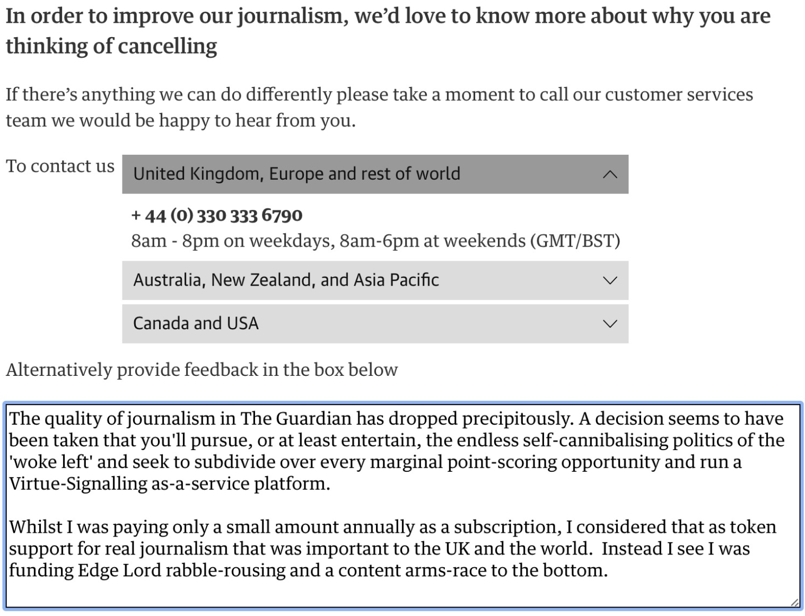

Goodbye, Guardian

Mainstream media, primarily print media, has been very visibly struggling for a long time at the hands of the Internet. I’d written it off as an anachronism and for the most part celebrated the demise of trash journalism.
The problem though was that whilst it did go through an extended “correction” in terms of readership and distribution, it wasn’t dying. It was being forced to adapt to a new reality - the reality of changing reader demographics, and the reality of having to pay for its deal with the Devil.
This correction cost them money. This need to compete with the FANG reality cost them money - but crucially it also changed how attention was vied for.
Accurate, level-headed reporting on important world-stage events doesn’t sell copy.
Inflammatory, click-bait trash designed to polarise opinion brings clicks and eyes and advertising dollars.
Amidst this race to the bottom, where was real news going to thrive? The British tabloids were well-suited to this kind of rabble-rousing and were able to come out fighting. To this day The Sun sadly remains an important rag in the UK’s electoral cycle. But what of the broadsheets?
The Times is a horrific Murdoch-rag and shouldn’t be trusted. The Telegraph is a horrible, sycophantic, Tory and Royalist fan-fiction generator. The Independent is so liberal that it can’t keep track of what it’s For or Against anymore and is routinely flagged on aggregator sites as “unreliable”.
Enter our saviour: The Guardian.
Long decried as a bastion for the politically correct, what set the Guardian aside in my estimation was its unwillingness to pander to the click-bait and its critically important investigative journalism.
On that basis I’d decided to support their efforts in keeping journalism alive and purchased a recurring annual membership.
For years I read their reporting and basked in the glow of knowing that I was playing some small part in keeping it alive.
But a few years ago I fell out with them; something had changed. A friend pointed out that there was an Editorial change in 2015 - maybe this aligns to the beginning of the end. It was subtle at first. The news was still broadly worth reading (and their quality investigative efforts were ongoing) but the opinion and lifestyle content started to circle the drain and slowly I started to avoid whole sections of what I was reading. Sure Polly Toynbee was still spewing the same, tedious, impotent call to arms for “the workers” that she’d been spewing since about 1821, but now there was a cacaphony of shills calling for more or less every part of everything to be disassembled for one reason or another.
Several times I quit reading it altogether over the past few years but carried on paying the membership for some higher purpose.
That changed this week though. I’m now on my 7th day of not using any Social Media and not reading The Guardian or any other news aggregation site. The article that finally tipped me over the edge was something about a Morrissey fan and a tattoo. Of course, it’s currently hip to crow at Morrissey because he’s turned out to be a stupid racist so this low-bar content serves to not only edify, but also gives us a convenient vehicle for our virtue signalling to get some air. And it was presented with a clickbait headline to boot!
Nope. I’m done. Goodbye, Guardian.
